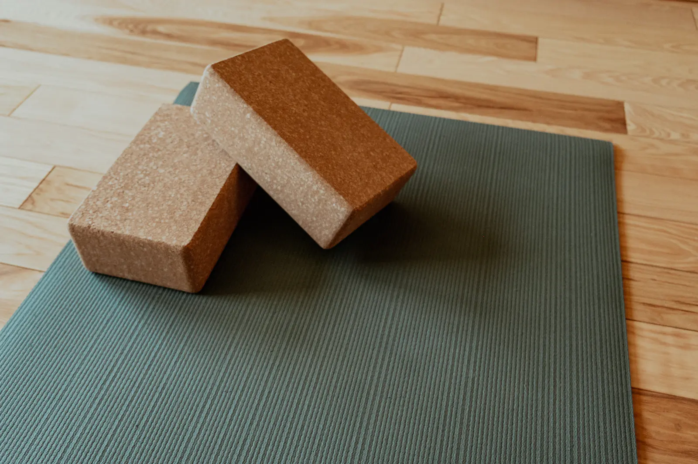
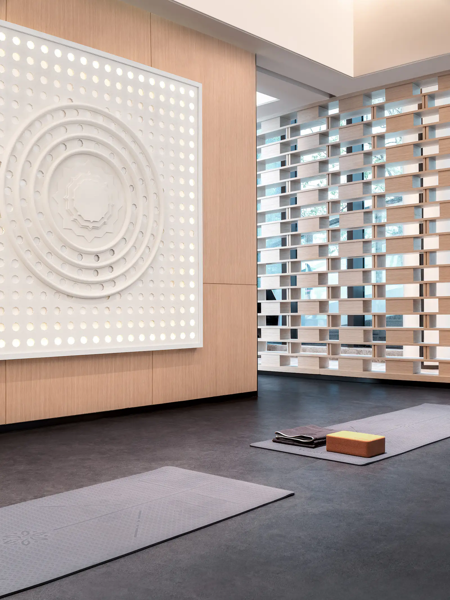
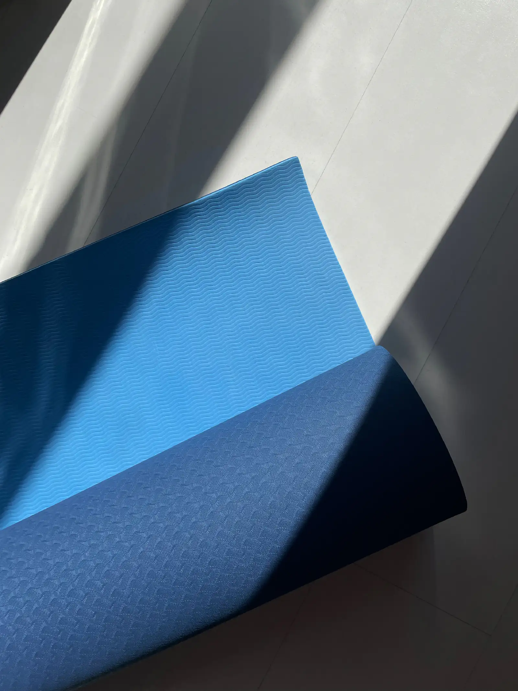
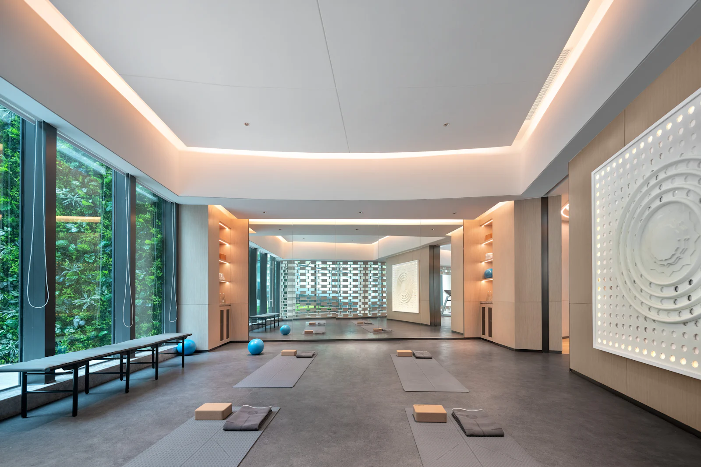

I
La séance
Nous terminons par un pranayama et une méditation, des sons, ce qui apporte détente, confiance et sérénité.

Professeur de yoga à Montpellier
Très important : il y a toujours cette notion de progression graduelle selon l’individu, les saisons et les différents rythmes de la journée.

01L’approche
Les séances pour tous, bienveillantes et encadrées, sont construites autour de techniques de respirations conscientes "Pranayama", de krya (actions de nettoyage), de postures "asana", de contre-postures, d’adaptations en fonction des possibilités de chaque élève.
Naturellement je me suis dirigée vers cet enseignement qui me correspondait totalement et qui respectait chaque élève dans sa différence.
Krishnamacharya, auprès de Bernard Bouanchaud à l’Institut Français de Yoga à Paris, puis à la Viniyoga fondation France.
Ici, la phrase qui vous ressemble : ce que vous voulez qu’on ressente en arrivant chez vous.
02La séance

Nous terminons par un pranayama et une méditation, des sons, ce qui apporte détente, confiance et sérénité.

J’ai suivi un cycle de 500 h de formation sur 4 années selon la lignée de T.K.V Desikachar et de son père T.
03Ce que ça peut apporter
Un temps pour relâcher, dans une atmosphère apaisante.
Retrouver un état de calme et d’apaisement.
Les accompagnements proposés relèvent du bien-être. Ils ne remplacent en aucun cas un avis, un diagnostic ou un traitement médical.
Ici, le détail de vos formules
Première séance, suivi, forfaits, bons cadeaux : chaque tarif aura sa ligne, comme vous le souhaitez.
05À propos
J’ai obtenu le diplôme en 2014, qui est un très bon bagage pour commencer à transmettre dans le respect des traditions. J’ai eu la chance de pratiquer le yoga en 2008 avec une professeure géniale qui avait été formée en viniyoga (hatha Yoga traditionnel de l’adaptation).
Magali Del Mastro
Ici, les mots de vos consultants
Les avis que vous avez déjà reçus pourront être repris ici, avec votre accord.
06Questions fréquentes
À Montpellier, sur rendez-vous.
Par téléphone, au 06 84 12 90 07.
Non. Les accompagnements proposés relèvent du bien-être. Ils ne remplacent en aucun cas un avis, un diagnostic ou un traitement médical.
07Contact et rendez-vous
Dites-moi ce qui vous amène, et nous trouvons ensemble le créneau qui vous convient.
06 84 12 90 07Appeler maintenantIci, l’adresse exacte de votre cabinet
Avec un plan d’accès et les indications pour venir.